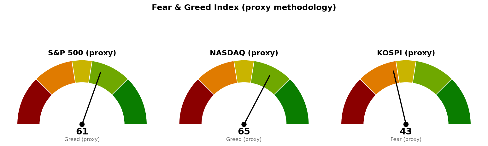

| 직전에 건 조건 | 판정 | 근거 |
|---|---|---|
| 코스피 6,830 이탈 (9/29 잠정 종가로 충족 처리) | 정정: 미충족 | 9/29 확정 종가 6,871 |
| 코스피 다음 지지 6,673 (9/30 종가 하회) | 진행 중 | 9/30 장중 저가 6,843 |
| 코스피 기준선 7,054 (종가 상회) | 미충족 | 9/30 장중 고가 6,966 |
| S&P 500 다음 지지 · 사다리 1차 7,653 | 미충족 | 9/29 저가 7,654, 종가 7,671 |
| 나스닥 다음 지지 · 사다리 1차 26,680 | 미충족 | 9/29 저가 26,718, 종가 26,798 |
| 미국 두 지수 기준선 7,794 · 27,159 | 미충족 | 9/29 고가 7,700 · 26,920 |
| 30년 금리 5.286% 아래 (종가) | 미충족 | 9/29 종가 5.594% |
직전 브리핑은 코스피 9월 29일 값을 시간별 자료의 마지막 체결가 6,826으로 채워 6,830을 잃었다고 판정했고, 확정 종가는 6,871이었습니다. 직전 판정이 틀렸으며, 직전이 적어 둔 대로 되돌려 코스피 다음 지지를 6,673에서 6,830으로 복원합니다. 이것 말고 세 지수의 계획 가격은 전부 직전과 같습니다. S&P 500은 9월 29일 저가가 사다리 1차에 1포인트 못 미쳐 집행되지 않았고, 양쪽 지수 모두 "못 지키면" 갈래로 들어가지 않았습니다.
20일선·50일선은 지수이동평균(최근 가격에 무게를 더 둔 평균)입니다. 코스피 값은 9월 30일 12시 장중 값이 들어 있습니다.
6,830은 오늘 장중에 닿을 수 있는 거리입니다. 오늘 시가 6,943이 고가 6,966을 찍은 뒤 되밀려 20일선 아래로 내려왔고, 20일선이 50일선 아래에 있는 배열은 직전과 같습니다. 6,830을 종가로 잃으면 6,673까지 받칠 가격이 없습니다.
사다리 1차는 한 세션 안에 닿는 거리이며, 9월 29일은 1포인트 차이로 닿지 않았습니다.
27,159 위로는 가격 근거가 없어 도착지를 적지 않습니다. 세 지수 모두 기준선과 다음 지지 사이에 있고 어느 쪽으로도 판정된 가격이 없어, 경로를 말할 근거가 없으므로 기준선과 두 갈래만 냅니다. 코스피의 10월 1일 시가는 오늘 밤 뉴욕 종가가 먼저 정합니다. 세 지수 회차를 전부 집행하면 계좌의 16%(22,319,744원), 모두 취소선에서 멈추면 계좌 -0.23%(-318,663원)이며 갭으로 취소선을 건너뛰면 손실은 더 커집니다.
| 지수 | 값 | 등락 | 시가 | 고가 | 저가 |
|---|---|---|---|---|---|
| S&P 500 (9/29 종가) | 7,671 | -0.17% | 7,700 | 7,700 | 7,654 |
| 나스닥 종합 (9/29 종가) | 26,798 | -0.09% | 26,909 | 26,920 | 26,718 |
| 코스피 (9/30 장중) | 6,851 | -0.29% | 6,943 | 6,966 | 6,843 |
| 니케이 225 (9/30 장중) | 66,319 | +1.28% | 66,129 | 66,519 | 66,014 |
20일 기준으로 지수를 이기는 미국 업종은 기술 하나에서 기술·헬스케어·커뮤니케이션 셋으로 늘었지만, 기술 말고는 0% 부근입니다. 9월 29일 하루는 유틸리티(+1.17%)가 가장 강했고 에너지(-0.90%)가 가장 약했습니다.
한국 섹터는 테마형 ETF 기준이라 미국 업종 ETF와 성격이 다릅니다. 20일 기준 지수를 이기는 곳은 반도체 하나이며, 은행이 오늘 -2.37%포인트 뒤처져 0 아래로 내려갔습니다. 이번 브리핑에서는 종목 발굴을 돌리지 않았습니다.
| 항목 | 값 | 직전 대비 |
|---|---|---|
| 미국 경기선행지수 (2026년 8월) | 100.96 | 7월 100.89 대비 +0.06 · 직전과 같은 값 |
| 한국 경기선행지수 (2026년 8월) | 102.87 | 7월 102.81 대비 +0.06 · 직전과 같은 값 |
| 미 10년 명목금리 | 5.24% (9/28 확정) · 9/29 지수 시세 5.255% | 확정치 9/25 5.17% 대비 +0.07%포인트 |
| 미 10년 기대물가 | 2.35% (9/29) | 9/28 2.34% 대비 +0.01%포인트 |
| 미 10년 실질금리 | 2.90% (9/28) | 9/25 2.83% 대비 +0.07%포인트 |
| 유가 (WTI) | 확정치 96.41달러 (9/22) · 선물 89.56달러 (9/29 종가) | 선물 전일 92.60달러 대비 -3.28% |
| 달러지수 (광의) | 120.33 (9/25) | 직전과 같음 (새 값 없음) |
| 변동성지수 (VIX) | 16.04 (9/29 종가) | 전일 16.07과 같은 수준 · 백분위 43.6 |
경기선행지수는 장기 평균을 100으로 놓고 경기 방향을 몇 달 앞서 보여주는 지표(OECD 작성)이며, 새 발표가 없어 해석도 직전과 같습니다. 9월 28일 명목금리 +0.07%포인트는 기대물가가 2.34%로 그대로인 채 실질금리가 같은 폭으로 올라 생긴 것입니다. 9월 29일 유가 선물이 -3.28% 내린 날 기대물가는 +0.01%포인트로 유가를 따라 내리지 않았습니다.
1. 연준 윌리엄스 "다음 금리 인상을 서두를 이유 없다" (Reuters, 9월 29일) 시장이 인상 경로를 두고 있는 상황에서 뉴욕 연은 총재가 속도를 늦추는 발언을 냈지만, 같은 날 10년·30년 금리 시세는 각각 5.255%·5.594%로 올랐습니다. 30년 금리 5.286% 조건과의 거리는 줄지 않았습니다.
2. 연준이 보는 물가지표(PCE) 미국 9월 30일 발표 (CNBC, 9월 29일) 물가 압력이 이어지는 가운데 소비는 버티는 숫자가 예상된다는 기사입니다. 미국 9월 30일 발표라 오늘 밤 S&P 500 7,653 · 나스닥 26,680을 판정하는 세션과 같은 날입니다.
3. 예측시장, 9월 고용이 전문가 예상보다 많았을 것으로 베팅 (CNBC, 9월 29일) 직전 브리핑이 인용한 소비자신뢰 81.9(예상 89)와 반대 방향의 기대입니다. 10월 2일 고용보고서가 어느 쪽으로 나오는지가 금리 시세를 거쳐 미국 두 지수의 기준선·다음 지지 판정에 닿습니다.
279건을 받아 10건을 추렸고, 나머지 7건은 개인 재무 상담·학자금 대출 등 지수 판단과 관계가 약해 뺐습니다.

세 점수 모두 공식 CNN Fear & Greed 지수가 아니라 모멘텀·상대강도·변동성·안전자산 선호 네 항목으로 계산한 대용 지표입니다. 변동성 항목은 자기 과거 3년 분포에서의 자리로 산출하며, 미국은 변동성지수 16.0이 백분위 43.6(754일), 코스피는 내재변동성 지수가 없어 20일 실현변동성 연율화 31.9%가 백분위 71.3(708일)입니다. 네 항목은 나스닥 63.8 · 55.3 · 56.4 · 84.1, S&P 500 60.1 · 49.9 · 56.4 · 75.0, 코스피 39.6 · 50.1 · 28.7 · 54.5입니다.
| 날짜 (한국시간) | 이벤트 | 확인할 것 |
|---|---|---|
| 9월 30일 15:30 | 코스피 마감 | 6,830 종가 위 마감 여부 |
| 9월 30일 (미국) | PCE 물가지수 | 금리 시세 방향 |
| 10월 1일 05:00 | 뉴욕 마감 (미국 9/30) | S&P 500 7,653 · 나스닥 26,680 장중 터치(사다리 1차)와 종가 위 마감 여부 · 30년 금리 5.286% |
| 10월 1일 | 신규 실업수당 청구 | 고용 흐름 |
| 10월 2일 | 고용보고서 · 실업률 | 예측시장 기대(예상 상회)와 소비자신뢰 약세 중 어느 쪽인지 |
10월 1~2일 일정은 경제지표 일정 조회로 확인했고, PCE 날짜는 CNBC 기사에서 옮겼습니다. 10월 14일 CPI · 10월 28일 FOMC는 이전 브리핑이 적어 둔 일정입니다.
장부 보유 16종목, 매도 기록 없음. 계좌 평가액 139,498,400원(9월 21일 등록값). 국면은 코스피 200일 이동평균 6,282 대비 +9.38%(9/29 종가), S&P 500 7,213 대비 +6.34%(9/29 종가)로 두 시장 모두 신규 진입이 가능한 국면입니다.
1. 매수 쪽 — 오늘 밤 집행될 수 있는 회차는 미국 둘입니다. S&P 500 1차 7,653(9/29 종가에서 18포인트)과 나스닥 1차 26,680(118포인트)이며, 각 계좌의 3%(4,184,952원)를 장중 터치로 집행합니다. 7,517 · 25,967을 일봉 종가로 잃으면 남은 회차를 멈춥니다. 2. 코스피 회차는 6,673 · 6,651 그대로이며 현재가에서 178포인트 아래입니다. 오늘 코스피에는 살 자리가 없고, 7,054 종가 회복 전에는 기준선 위 추격을 하지 않습니다. 3. TQQQ (TQQQ) 50주는 나스닥 3배 추종이라 나스닥 1차를 집행하면 같은 방향 노출이 겹칩니다. 4. 신규 종목 편입은 30년 금리가 종가로 5.286% 아래일 때 재개합니다(9/29 5.594%). 5. 목표 도달 신호가 나왔는데 체결 기록이 없는 보유: 현대해상 (001450.KS) 10주 50,500원에서 전량 매도 (목표 도달, 9/29) · 한화손해보험 (000370.KS) 50주 7,920원에서 전량 매도 (목표 도달, 9/28) · AMD (AMD) 3주 638달러에서 전량 매도 (목표 도달, 9/25). 매도했으면 수량·단가·날짜를 알려 주십시오. 6. 매도 신호 뒤 체결 기록이 없는 종목: USA Rare Earth (USAR) 7회 · Netflix (NFLX) 3회 · MP Materials (MP) · Alibaba (BABA) · GE Vernova (GEV) 각 1회로 직전과 같습니다. 장기 보유로 둔 Fluence Energy (FLNC) 6회 · LightPath (LPTH) 2회는 기록만 쌓입니다. 사실을 적을 뿐 매도를 권하는 것이 아닙니다.
다음 세션에 볼 것 하나 — 오늘 15:30 코스피 종가가 6,830 위인지입니다.
ATR(하루 평균 변동폭): 최근 14일 동안 하루에 오르내린 폭의 평균. · EMA(지수이동평균): 최근 가격에 더 무게를 준 평균 가격선이며 20일선·50일선은 이 방식입니다. · RSI(상대강도지수): 최근 14일 오른 폭과 내린 폭의 비율을 0~100으로 나타낸 값. · 20일 초과수익: 최근 20거래일 수익률에서 기준 지수 수익률을 뺀 값. · VIX(변동성지수): S&P 500 옵션에 반영된 향후 30일 예상 변동폭. · PCE: 연준이 물가 목표 판단에 쓰는 개인소비지출 물가지수. · 기대물가: 명목금리와 물가연동채 금리의 차이로 시장이 보는 평균 물가상승률. · 실질금리: 물가연동국채가 직접 주는 금리.
이 문서는 참고 정보이며 투자자문이 아닙니다. 투자 판단과 그 결과에 대한 책임은 투자자 본인에게 있습니다.